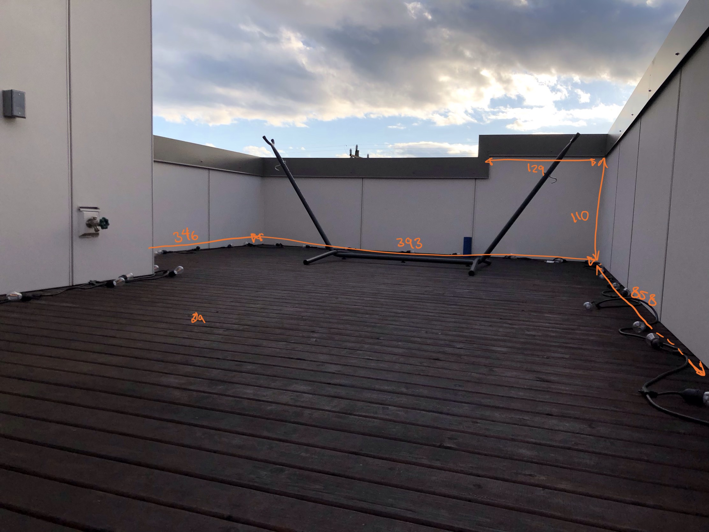
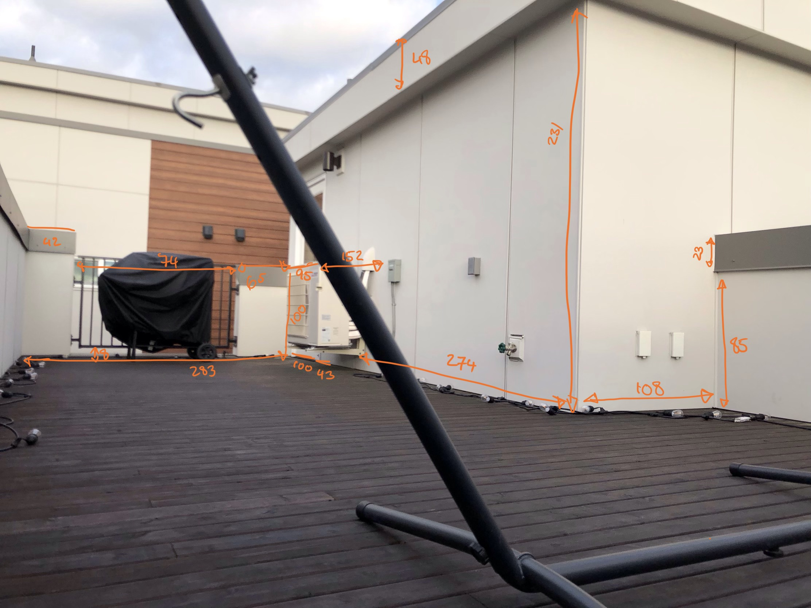

For this assignment we were tasked to create a proposal pitch for our final project that includes:
1) A concept, including concept sketches, intended use case, context
Since I moved to my place, I haven’t had enough time to put my outdoor space together. Because of COVID-19, I’ve decided to design and build it myself after graduation (this quarter!!)
This space (pictured with measurements below) is on my top floor, so I’d like to minimize my moving efforts and create a detailed design plan prior to purchasing, carrying, and moving any item.
Another objective of mine is to practice joining/merging separate surfaces in Rhino since that’s been a troubling area for me in the past.


2) A breakdown of tasks
My end goal is to:
- Create CAD model of this space
- Design and place the furniture
- 3D print the mockups
- Extra credit: Realistic rendering
*All above will be done at 0.05x ratio
3) A timeline with contingency plans
Week 1:
- Perform measurements
- Create the space without furniture
- 3D print the space without furniture
- Order parts Week 2:
- Design the furniture
- 3D print and place the furniture
4) A bill of material with sourcing schedule
Since the only material I need is colored filament, I’m estimating the material cost to be ~$20.
I’m currently deciding between these 3 links below for ordering colored PLA! Any thoughts would be appreciated!
Link 1 Link 2 Link 3